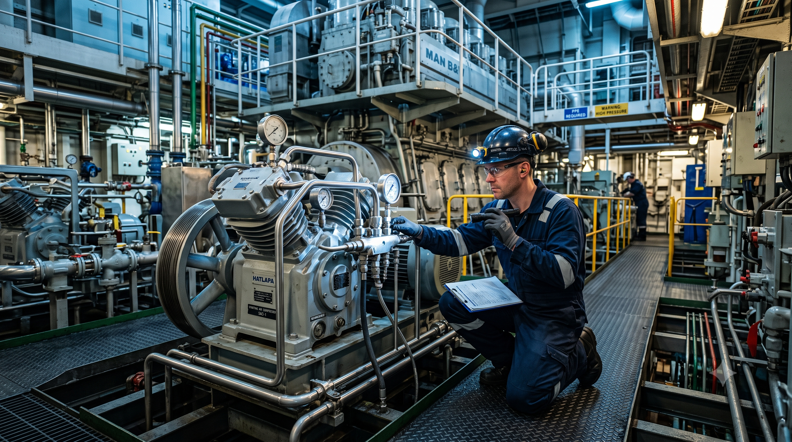

Marine Air Compressors
Complete inspection, repair, overhauling and preventive maintenance for marine starting air and service air compressors.
- Inspection & Diagnostics
- Complete Overhauling
- Performance Testing
Established in 2012, SAMS Marine Services provides professional marine compressor overhauling, genuine OEM spare parts supply, onboard technical support, and engineering solutions that help ship owners, ship managers, and marine operators reduce downtime, improve operational reliability, and maintain safe vessel performance.
Delivering trusted marine engineering solutions since 2012.
Inspection, repair, overhauling and preventive maintenance.
Quality replacement parts from trusted manufacturers.
Offshore • Onshore • Onboard marine engineering assistance.
SAMS Marine Services delivers reliable marine compressor overhauling, genuine OEM spare parts, onboard technical support and preventive maintenance for vessels operating worldwide.

Established in 2012, SAMS Marine Services has built a reputation for delivering dependable marine engineering solutions to ship owners, ship managers and marine operators across the maritime industry.
Our expertise includes marine air compressor overhauling, refrigeration compressor servicing, genuine OEM spare parts supply, onboard troubleshooting, workshop repairs, inspections and preventive maintenance designed to minimise vessel downtime and maximise operational reliability.
Since 2012
Marine Compressors
Genuine & OEM Parts
24×7 Worldwide Service
We provide reliable marine engineering services, compressor overhauling, genuine OEM spare parts, onboard technical support, and preventive maintenance to help ship owners and operators maximise equipment performance while minimising vessel downtime.
Complete inspection, repair, overhauling and preventive maintenance for marine starting air and service air compressors.
Professional repair, servicing and overhauling of marine refrigeration compressor systems for reliable operation.
Genuine and OEM-quality spare parts sourced from trusted manufacturers for marine compressors and related machinery.
Experienced marine engineers providing onboard inspection, troubleshooting, maintenance and emergency technical support.
Precision workshop repair and compressor overhauling using professional equipment and quality-controlled procedures.
Advanced fault diagnosis and preventive maintenance programmes designed to maximise equipment reliability and reduce downtime.
Our experienced marine engineers are ready to provide reliable offshore, onshore and onboard technical support tailored to your operational requirements.
Since 2012, SAMS Marine Services has been helping ship owners, ship managers and marine operators maintain reliable vessel performance through professional compressor servicing, genuine spare parts and responsive technical support.

Our experienced marine engineers combine technical expertise, quality workmanship and genuine OEM spare parts to deliver reliable engineering solutions that minimise downtime and maximise operational efficiency.
Skilled professionals with extensive onboard, workshop and port service experience.
Reliable spare parts sourced from trusted manufacturers for long-lasting performance.
Offshore, Onshore and Onboard technical assistance whenever your vessel requires it.
Every project follows professional engineering practices and international marine standards.
Years Experience
Technical Support
Quality Spare Parts
Offshore • Onshore • Onboard
From the initial enquiry to final testing and technical support, every project follows a structured engineering process designed to ensure quality, reliability and timely service.
Share your technical requirement, equipment condition or service enquiry with our engineering team.
Our engineers inspect the equipment and identify the condition and root cause of the problem.
Repair and overhaul work is carried out using professional tools, quality parts and proven engineering practices.
Equipment is thoroughly inspected and tested to confirm safe, reliable and satisfactory operation.
Following completion, we provide technical assistance and ongoing support whenever your vessel requires us.
Contact our team for marine compressor servicing, spare parts, onboard technical support or workshop repair requirements.
We supply genuine and OEM-quality spare parts for marine compressors, refrigeration systems and related equipment, helping vessels maintain reliable performance and minimize downtime.
Replacement components and service parts for marine starting-air and service-air compressor systems.
View CategoryOEM-quality replacement parts for marine refrigeration and cooling compressor systems.
View CategoryFilters, seals, gaskets, repair kits and essential maintenance components for reliable equipment operation.
View CategoryValves, fittings, accessories and related components for marine compressor and engineering applications.
View CategorySend us your compressor make, model or part number and our team will assist with your requirement.
Our marine engineering services and spare parts support ship owners, operators, shipyards and marine engineering companies with dependable technical solutions.
Technical support and compressor solutions for commercial vessels and shipping operations.
Reliable technical assistance for offshore vessels and marine operations.
Port-based engineering services and technical support for vessels and marine facilities.
Compressor repair, overhaul and technical support for shipyard projects and vessels.
Dependable maintenance and technical solutions for marine operators and vessel fleets.
Technical services and marine compressor solutions for engineering and service partners.
From marine compressor overhauling and genuine spare parts to onboard technical assistance and preventive maintenance, SAMS Marine Services is ready to support your vessel with dependable engineering solutions.